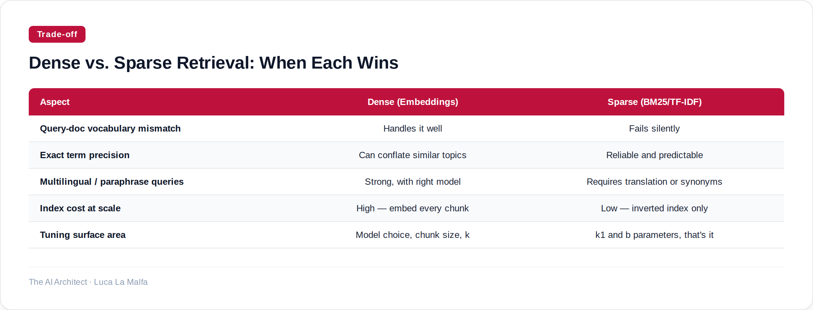

Vector search and BM25 solve different problems — here's how to pick the right one, or combine both.
October 23, 2026
Most teams reach for vector search the moment someone says "semantic search" or "RAG," and they do it without asking whether their problem actually needs it. I've seen this go wrong in both directions: a team spending weeks tuning embedding models when a simple keyword index would have been faster and more accurate for their structured product catalog, and another team stubbornly sticking with BM25 for a multilingual support corpus where vocabulary mismatch was killing recall. The honest answer is that dense retrieval and sparse retrieval are genuinely different tools, and the choice between them shapes everything downstream — latency, cost, maintenance burden, and ultimately whether your LLM gets the right context.
Dense retrieval encodes meaning into a fixed-size vector and finds neighbors by geometric proximity. That's great when the user's words don't match the document's words but the intent does. Sparse retrieval — BM25, TF-IDF, the classics — rewards exact and near-exact term overlap. That's great when precision matters more than recall, when your corpus is domain-specific with controlled vocabulary, or when you simply can't afford to embed and index millions of documents on a tight inference budget. Neither is universally better. The failure mode of dense retrieval is subtle: it confidently retrieves plausible-sounding but wrong documents because the embedding space conflates topics that share surface-level semantic neighborhoods. The failure mode of sparse retrieval is obvious: it misses everything the user didn't phrase exactly right.
Option A
chroma-core/chroma — Embedding database and search infrastructure for AI applications.
That result is the case for dense retrieval in one line: the user wrote "forgot how to get back into my account" and the top hit is the password reset doc, which shares zero keywords with the query. BM25 would have scored that document near zero. But notice the second result — 2FA setup — is plausible but probably not what the user needs. That's the conflation problem in action. Dense retrieval casts a wider net, which is good for recall and dangerous for precision. If your downstream LLM prompt is short and you can only afford two retrieved chunks, that second slot matters enormously.
LlamaIndex sits one layer above the raw embedding store. It gives you abstractions for chunking, indexing, and retrieval strategies — including hybrid retrieval that blends dense and sparse scores. That's where things get genuinely interesting, and also where you can waste a lot of time tuning weights if you're not disciplined about measuring what actually changes answer quality. My rule: always establish a BM25 baseline first, measure it against your eval set, then add dense retrieval and measure again. If the hybrid doesn't beat both individually on your specific corpus, you've added complexity for nothing.
Option B
run-llama/llama_index — Indexing and retrieval framework built on top of embeddings.

The practical upshot: if you're building a RAG system over internal documentation or a support knowledge base, start with BM25. It's free, interpretable, and fast to debug. Add dense retrieval when you have evidence — from real user queries that returned nothing useful — that vocabulary mismatch is actually your problem. And if you go hybrid, weight the sparse score higher than you think you should. In my experience, teams consistently over-index on the semantic side because it feels more sophisticated, and then wonder why retrieval precision dropped.